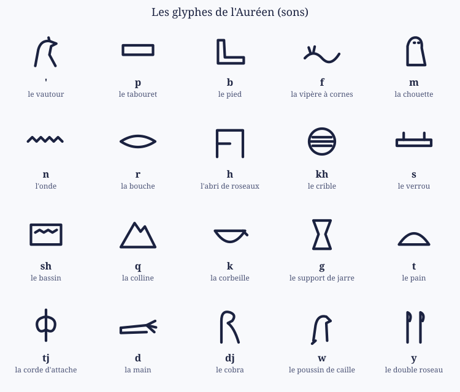
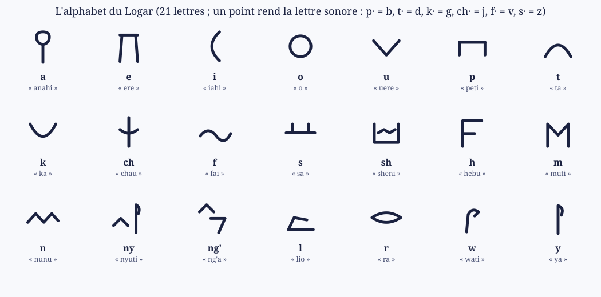

CIV-007 — L'Auréen : glyphes, alphabet du Logar, formules
L'Auréen est la langue du Premier Fils, celle des lois de son monde : la première langue jamais prononcée, la matrice de toutes les autres. Elle porte une puissance d'autorité et de création. Les dieux la parlent en invités ; les mortels l'entendent comme un chant polyphonique.
- L'empire de la logique (l'empire magitech) a été le premier à l'écrire, parce que le Premier Fils le lui a enseigné.
- Les dieux lui ont volé cette écriture, pour graver les Thotems et rendre les Pactes contraignants (le Tome Sacré). Ses fragments sont gravés sur les Thotems.
Système général : CIV-004 Les langues construites ; règles et racines : Auréen ; sa fille, la langue de tous : CIV-006 Le Logar.
1. Les glyphes
L'Auréen s'écrit en glyphes. Trois sortes de signes :
- les glyphes-sons : un dessin pour une consonne (le tabouret pour p, la chouette pour m, l'onde pour n…) ;
- les glyphes-mots : un dessin pour une idée (ankh « la vie », iret « l'œil », shen « l'anneau qui enferme ») ;
- on n'écrit que les consonnes : Seshu s'écrit s-sh, maat s'écrit m-t. Les voyelles se transmettent par la voix, de prêtre à prêtre.
- On lit de droite à gauche, dans le sens où regardent les animaux des glyphes.

Le nom dans l'anneau. Un nom écrit dans l'anneau shen (le cartouche) est scellé.
Les Égyptiens appelaient leurs hiéroglyphes medu netjer, « les paroles des dieux ». Ils mêlaient signes-sons et signes-mots, n'écrivaient que les consonnes, et entouraient les noms royaux d'un cartouche, l'anneau magique qui les protégeait.
Seshu, le Scribe, écrit dans son anneau : le bassin (sh) et le verrou (s), lus de droite à gauche.
2. L'alphabet du Logar, né des glyphes
Vers −1850, dans les mines de turquoise du Sinaï, des ouvriers de langue sémitique ont pris des hiéroglyphes et n'en ont gardé que le premier son de leur nom : la tête de bœuf (alp) est devenue A, la maison (bet) B, l'eau (mem) M. C'est l'alphabet proto-sinaïtique, l'ancêtre de nos lettres, de l'arabe et de l'hébreu. Même les voyelles grecques sont nées ainsi : l'œil phénicien (ayin) est devenu le O.
Les scribes de Seshu ont fait de même pour rendre le Logar écrivable par tous : chaque lettre est un glyphe simplifié, qui note le premier son de son nom en Logar.
- 21 lettres : 5 voyelles (a, e, i, o, u) et 16 consonnes.
- Le point des sonores : une lettre pointée devient sonore (p· = b, t· = d, k· = g, ch· = j, f· = v, s· = z), comme les points de l'alphabet arabe. C'est ce qui garde l'alphabet à une vingtaine de signes.
- mb, nd, ng, nz s'écrivent avec deux lettres (m + p·, n + t·…).
- On lit de gauche à droite, à l'inverse des glyphes : on reconnaît d'un coup d'œil un texte sacré d'un texte commun.

Quelques lettres et leur origine : a vient de l'ankh (la vie, anahi), m de la mère (muti), l du lion couché, i du croissant de lune (iahi).
Les scribes de l'Égypte tardive notaient le l avec un lion couché.
« Hetepu ! Anahi, weja, senebu ! » (« Paix ! Vie, prospérité, santé ! ») en alphabet du Logar.
3. La grammaire de l'Auréen (en bref)
| Trait | Auréen | Exemple |
|---|---|---|
| Ordre des mots | verbe, sujet, objet | sedjem neter medu « le dieu entend la parole » |
| Pronoms collés au mot | -i (moi), -ek (toi), -ef (lui), -es (elle), -en (nous), -ten (vous), -sen (eux) | ren-i « mon nom », sedjem-ef « il entend » |
| Féminin | -t, -et | neter « dieu », netjeret « déesse » |
| Pluriel | -u | neteru « les dieux » |
| Complément du nom | en | ren en neter « le nom du dieu » |
| Négation | nen | nen ren-ek « tu n'as pas de nom » |
| Prépositions | em (dans, comme), her (sur), er (vers) | maat her ta « l'ordre sur la terre » |
Cette grammaire est celle de l'égyptien classique : verbe en tête, pronoms suffixes, féminin en -t.
4. Les formules
Une formule d'Auréen commence par Djed medu, « paroles à dire ».
| Formule | Sens | Usage |
|---|---|---|
| Djed medu : maat her ta, isfet er duat. | « Paroles à dire : l'ordre sur la terre, le désordre vers le monde d'en bas. » | La formule de la Restriction : la plus gravée sur les Thotems. Elle repousse le Chaos agité |
| Sedjem, neter ! | « Écoute, dieu ! » | l'invocation |
| Ankh, djet. | « Vie, éternité. » | la bénédiction |
| Nen ren-ek. | « Tu n'as pas de nom. » | la pire malédiction : effacer un nom. Un dieu conceptuel meurt quand on l'oublie (DIV-002 Origines des dieux) |
| Un nom dans l'anneau shen | le nom est scellé | protège un nom (et une âme) contre la magie d'autrui |
Djed medu est l'ouverture réelle des textes rituels égyptiens. Les Égyptiens martelaient le nom des condamnés pour les tuer une seconde fois.
5. Pourquoi l'Auréen agit
- L'Auréen est la langue de la Restriction. Une phrase d'Auréen correctement dite oriente le Chaos comme le Premier Fils l'a orienté (PHY-006 Le chaon et l'âme : un Concept est une orientation).
- Les mortels ne peuvent pas la prononcer : elle porte des milliers de fois plus d'information que la voix humaine (≈ 39 bits par seconde dans toutes les langues réelles). Ils n'en entendent qu'un chœur.
- C'est pour ça que l'Auréen s'écrit. Un glyphe gravé fixe une orientation dans la matière, comme la roche de Maakar garde son Chaos orienté (SIM-16 Maakar flottant). L'écriture est la seule façon mortelle d'utiliser l'Auréen : les Thotems sont des formules gravées qui tiennent une loi en place, tant que la pierre et son Chaos durent.
Liens
CIV-004 Les langues construites · CIV-006 Le Logar · CIV-002 Les langues · COS-003 La Restriction · DIV-004 Les noms des dieux · Auréen